Age guide: 4–6 years. Caregiver/educator preview. Not for unsupervised infant digital use as a product.










Close this preview anytime. No accounts. No tracking. Author notes are not shown in this child-safe preview.